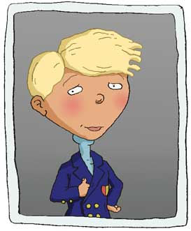

|
 |
A highly civilized little boy and a gift thinker besides, Blake Gripling has been skipped ahead two years making him the youngest in his grade.
Raised in part by his British butler Winston, Blake has the mild manners of a proper English gentleman and wouldn’t have it any other way.
Blake Gripling is nothing like his older sister Courtney.
In fact, he is actually a bit of an outcast—thanks to his threatening intellect and young age.
More than anything, Blake would like to be accepted by his peers— particularly by Carl Foutely.
Blake sees that, like himself, Carl is a brilliant mind.
He especially admires the way Carl has managed to "stay boyish" without letting his mature to the point of being "unfun to play with" as Blake is often labeled.
But Carl’s reluctance to embrace Blake has left the boys pitied against each other in perpetual plots to undo the other.
Blake wishes more than anything that "Woodsey" would move away so that Carl would be vulnerable enough to accept his friendship.
|